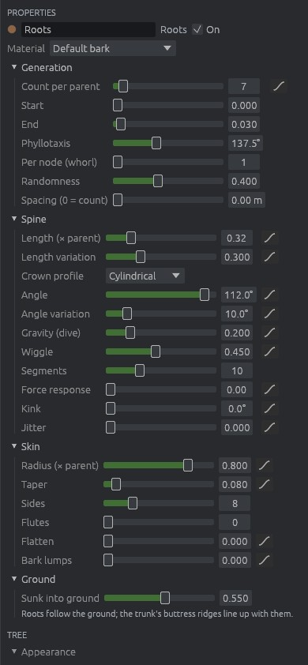
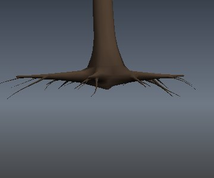
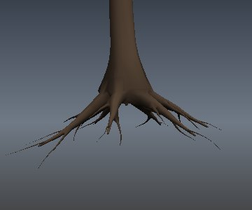
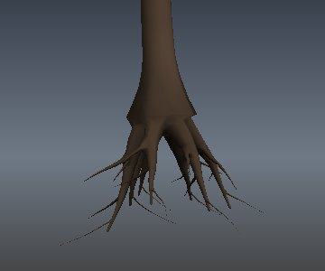
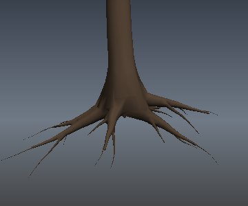
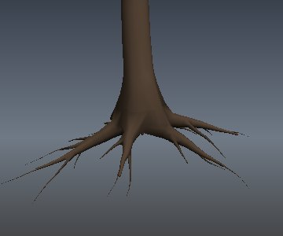
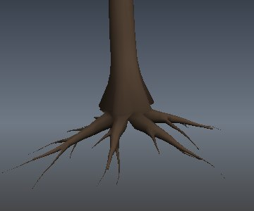
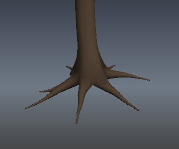
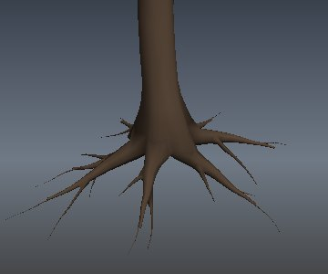

Roots
A roots generator grows roots from the base of a trunk. Roots follow the ground, sink into it and never rise above it. Branches added under roots become side roots and follow the same rules.

Adding roots
- Select a trunk generator.
- Click + Roots. The roots start just above the ground around the trunk.
- For side roots, select the roots generator and click + Branches.
When roots are added, the trunk reaches a little below the ground so that every root grows out of bark, and its buttress flare and flutes line up with the roots.
Settings that work differently for roots
- Start and End
- The band of the trunk where roots begin. The default, 0 to 0.03, keeps them at the very bottom.
- Angle
- The starting direction relative to the trunk. Values above 90° point the roots outwards and slightly down. Roots never start upwards.
- Gravity (dive) 0 to 1
- How steeply the roots head into the soil. At 0 they run along the ground surface, at 1 they turn straight down. Roots turn towards this direction gradually, so they leave the trunk near the surface and dive further away from it. Negative values have no effect on roots.
- Wiggle
- Roots meander more than branches with the same value, mostly sideways.
- Force response
- Roots ignore forces by default (0).



Ground
- Sunk into ground 0 to 1
- How deep the roots lie in the soil, measured in root thicknesses. 0 rests them on top of the ground; 1 sinks them until their top is just below the surface. Values around 0.5 show the upper half of each root, which looks natural on flat terrain.



Side roots
Side roots are branches under a roots generator. They start with defaults suited to roots: a few per root, starting a quarter of the way out, short and thin. Like roots, they stay in the ground and take Gravity as the dive angle.


Note Roots are part of the tree mesh and are exported with it. Parts below the ground are hidden by the terrain in your engine. Pruning never cuts roots.